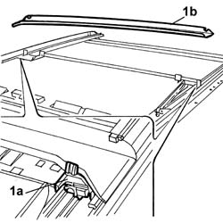
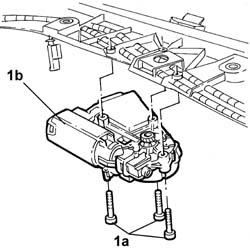
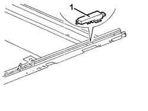
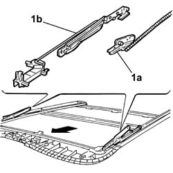

7030B52 Sun roof glass support JOINTS/SLIDES - R.R.
- Path
- Procedures > 70 FITTINGS > 7030 SUN ROOF AND HOOD > 7030B SLIDING ROOF > 7030B52 Sun roof glass support JOINTS/SLIDES - R.R.
- Kind
- repair procedure (removal / refitting; the operation number is the code)
- Applies to
- all engines; all production periods
- Interactive page
- https://sloeber94.github.io/elrnDB-lThss/en/#/113711
Applies to: all engines; all production periods
 Removing
Removing
 Refitting
Refitting- Disconnect the negative battery terminal.
See in Op. 7040H30 FRONT PILLAR TRIM (one), left or right - R.R.
- [left and right sides]
See in Op. 7040H36 CENTRE PILLAR TRIM LOWER ELEMENT (one), left or right - R.R.
- [left and right sides]
See in Op. 7040H38 CENTRE PILLAR TRIM UPPER ELEMENT (one), left or right - R.R.
- [left and right sides]
See in Op. 7040H46 Left or right rear pillar upper trim (one) - R.R.
- [left and right sides]
See in Op. 7065C30 interior l/h or r/h grab handle (one) - r+r
- [front and rear]
See in Op. 7065C34 SUN VISOR (one) left or right - R.R.
- [left and right sides]
See in Op. 7040E50 Front MODULAR COURTESY LIGHT UNIT - R.R.
See in Op. 7040E16 rear courtesy light - r+r
See in Op. 7030B64 Sun roof control SWITCH - R.R.
See in Op. 7210E36 front side door
- [passenger side]
See in Op. 7045A10 FRONT SEAT (one) left or right - R.R.
- [passenger side]
See in Op. 7040H16 Roof LINING for versions with sun roof - R.R.
See in Op. 7030B18 Sun roof GLASS PANEL - R.R.
See in Op. 7030B10 SUN ROOF (assembly) - R.R. with roof lining removed
1. Acting on the retaining springs (1a) remove the water drainage channel (1b).

Applies to: all engines; all production periods
1. Undo the fixing bolts (1a) and remove the sunroof motor (1b).

Applies to: all engines; all production periods
1. Release the end of travel mounting on both sides.

Applies to: all engines; all production periods
1. Release the slide (1a) from the housing in the direction shown by the arrow and then release it from the drive cable (1b).
Applies to: all engines; all production periods
Refitting
Removing- Check the condition of each individual component.
1. Fit the drive cable (1a) in the housing and secure it to the slide (1b).
- Place the slide in the end of travel position, until it is in the "tilted" position.

Applies to: all engines; all production periods
1. Fit the end of travel mounting on both sides.
Applies to: all engines; all production periods
- Position the motor and secure it using the bolts.
- Position the water drainage channel in the housing until the click of the retaining springs is heard.
See in Op. 7030B10 SUN ROOF (assembly) - R.R. with roof lining removed
See in Op. 7030B18 Sun roof GLASS PANEL - R.R.
See in Op. 7040H16 Roof LINING for versions with sun roof - R.R.
See in Op. 7045A10 FRONT SEAT (one) left or right - R.R.
- [passenger side]
See in Op. 7210E36 front side door
- [passenger side]
See in Op. 7030B64 Sun roof control SWITCH - R.R.
See in Op. 7040E16 rear courtesy light - r+r
See in Op. 7040E50 Front MODULAR COURTESY LIGHT UNIT - R.R.
See in Op. 7065C34 SUN VISOR (one) left or right - R.R.
- [left and right sides]
See in Op. 7065C30 interior l/h or r/h grab handle (one) - r+r
- [front and rear]
See in Op. 7040H46 Left or right rear pillar upper trim (one) - R.R.
- [left and right sides]
See in Op. 7040H38 CENTRE PILLAR TRIM UPPER ELEMENT (one), left or right - R.R.
- [left and right sides]
See in Op. 7040H36 CENTRE PILLAR TRIM LOWER ELEMENT (one), left or right - R.R.
- [left and right sides]
See in Op. 7040H30 FRONT PILLAR TRIM (one), left or right - R.R.
- [left and right sides]
- Connect the battery and temporarily connect the selector and carry out the sun roof programming procedure.
See in Op. 7030B54 SUN ROOF (assembly) - Alignment and Positioning
-
Topics linked from this page (15)
- 7030B10 SUN ROOF (assembly) - R.R. with roof lining removed
- 7030B18 Sun roof GLASS PANEL - R.R.
- 7030B54 SUN ROOF (assembly) - Alignment and Positioning
- 7030B64 Sun roof control SWITCH - R.R.
- 7040E16 rear courtesy light - r+r
- 7040E50 Front MODULAR COURTESY LIGHT UNIT - R.R.
- 7040H16 Roof LINING for versions with sun roof - R.R.
- 7040H30 FRONT PILLAR TRIM (one), left or right - R.R.
- 7040H36 CENTRE PILLAR TRIM LOWER ELEMENT (one), left or right - R.R.
- 7040H38 CENTRE PILLAR TRIM UPPER ELEMENT (one), left or right - R.R.
- 7040H46 Left or right rear pillar upper trim (one) - R.R.
- 7045A10 FRONT SEAT (one) left or right - R.R.
- 7065C30 interior l/h or r/h grab handle (one) - r+r
- 7065C34 SUN VISOR (one) left or right - R.R.
- 7210E36 front side door